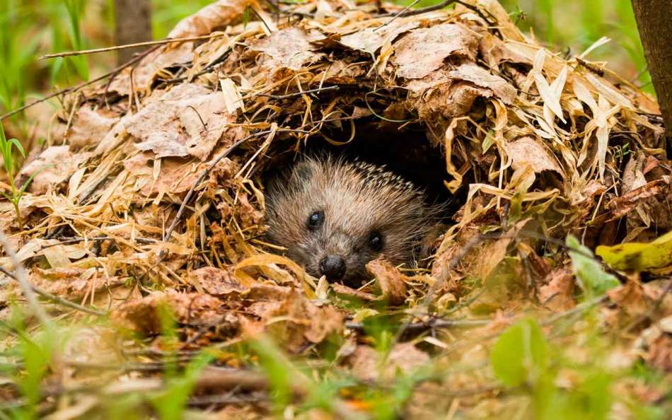

HABITAT
El erizo común tiende a vivir en espacios abiertos cubiertos por matorrales, en terrenos cultivados, en dunas de arena, y hasta en pedregales, pero que en general no sean sitios demasiado húmedos ni demasiado fríos. Se halla en bosques perennifolios y caducifolios, y en sus lindes.

UBICACIÓN GEOGRAFICA
En Europa, Asia y África, también han sido introducidos en América, Nueva Zelanda y Australia, pero no hay erizos endémicos en Oceanía ni en América. En España viven dos especies: el erizo europeo y el erizo moruno, pero en cautividad es muy frecuente el erizo orejudo.En general, El erizo común tiende a vivir en espacios abiertos cubiertos por matorrales, en terrenos cultivados, en dunas de arena, y hasta en pedregales lugares queno sean demasiados humedos por su salud y vinestar
He aqui algunos generos de erizos que habbitan en estos lugares:
| Lugar de origen | genero | Especies |
|---|---|---|
| originarios continente africano | Atelerix | Erizo de vientre blanco (Atelerix albiventris) Erizo moruno (Atelerix algirus) presente en el norte de África y algunos lugares del sur de Europa. Erizo sudafricano (Atelerix frontalis) Erizo somalí (Atelerix sclateri) |
| originarios Italia, Francia y la península ibérica y la del Sureste de Europa | Erinaceus | Erinaceus amurensis Erinaceus concolor Erinaceus europaeus Erinaceus roumanicus |
| originarios continente asiático | Hemiechinus | Erizo orejudo (Hemiechinus auritus) Erizo orejudo de la India (Hemiechinus collaris). |
| originarios estepas centroasiáticas de Rusia, Mongolia y China | Mesechinus | Mesechinus dauuricus (Sundevall, 1842) - Erizo del Gobi. Mesechinus hughi (Thomas, 1908) - Erizo de Hugh Mesechinus miodon He, Jiang & Ai, 20182 - Erizo del bosque de Gaoligong. Mesechinus orientalis Shi, Yao, He, Bai, Zhou, Fan, Su, Nie, Yang, Onditi, Jiang et Chen, 20233 - Erizo de bosque oriental Mesechinus wangi Thomas, 1908 - Erizo de bosque de dientes pequeños. |
| originarios de la región del Sahara, Oriente Próximo y el subcontinente indio. | Paraechinus | Erizo del desierto (Paraechinus aethiopicus) Erizo de Brandt (Paraechinus hypomelas) Erizo de la India (Paraechinus micropus) Erizo de vientre desnudo (Paraechinus nudiventris) |
HÁBITOS ALIMENTICIOS
Los erizos son omnívoros, lo que significa que comen tanto plantas como animales. La dieta de un erizo salvaje varía según la estación del año. En primavera y verano comen sobre todo insectos, como escarabajos, saltamontes, orugas y arañas. También comen otros animales pequeños como roedores, ranas y lagartos.
HÁBITOS REPRODUCTIVOS
Los erizos alcanzan la madurez sexual sobre los 2 meses de edad y crían a lo largo de todo el año. La gestación dura 34-37 días y el tamaño de la camada suele ser de unas 1-7 crías que nacen con unos 10 gramos de peso y sin espinas, las cuales comienzan a aparecer a las 24h.Algunos machos muerden las púas del lomo de la hembra. Este es un comportamiento muy común en erizos macho que todavía no han pulido el metodo del apareamiento, muerden las puas para sostenerse encima de la eriza o para conseguir subirse. Cuando finalmente la hembra cede, el macho la montará.
ESTADO DE CONSERVACIÓN
El erizo no esta ni en peligro de extinción ni tampoco extinto